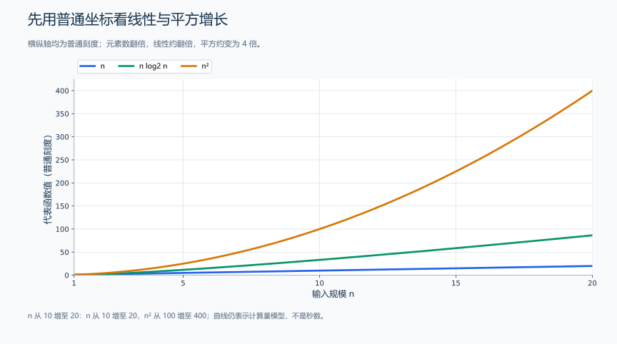
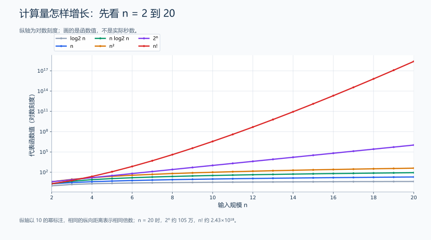
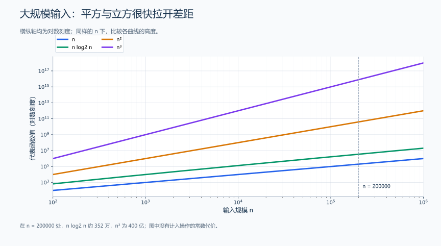
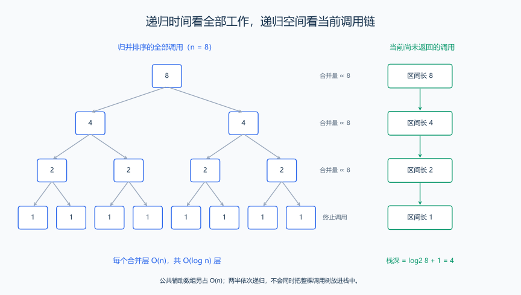
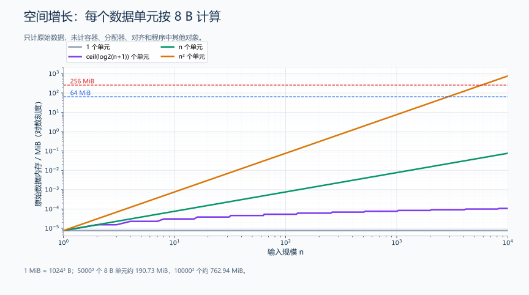

（一） 时间复杂度与空间复杂度
同一个题目可以用一次遍历，也可以用两层枚举；先把输入规模代入，比较工作量与同时占用的存储，再决定哪种做法能用于最大数据。
先判断一个方法能不能处理题目的最大数据，再决定是否值得实现。复杂度描述输入规模增大时，计算量和内存需求如何增长；它不是程序实际用了多少秒、多少 MiB 的直接测量值。
1. 输入规模、基本操作与大 O
输入规模要先定义清楚。数组常用元素数 n，字符串匹配可能需要两个长度 n、m，图算法需要顶点数 V 和边数 E，背包问题还需要容量 C。不能把所有题目的规模都简化成一个 n。
估算时间时，可以选出反复执行的基本操作，例如一次比较、一次加法或一次状态转移，统计它随规模增长的次数。我们通常假设机器整数运算、数组下标访问的单次代价为常数；若一次操作需要遍历字符串、复制数组或计算大整数，就要继续展开它的代价。
例如某段程序的操作次数是 \(3n^2+5n+7\)。随着 n 增大，平方项主导增长，常数系数不影响增长阶，所以通常记作 \(O(n^2)\)。忽略常数是为了比较增长趋势，实际判断能否通过时仍要考虑常数。
严格地说，\(O(f(n))\) 表示一个渐近上界：存在正常数 c 和起始规模 n₀，使足够大的 n 上有 \(T(n)\le c f(n)\)。若上下界都与同一个函数成常数比例，则可以写 \(\Theta(f(n))\)。本笔记通常用大 O 表示分析得到的常用增长量级；遇到仅有上界、最坏情况或均摊情况时会另作说明。
对数的底数只差一个常数，所以复杂度中通常写 \(O(\log n)\)。手算时统一用 \(\log_2 n\)，因为“每轮减半”正好对应二进制位数。
注：根据对数换底公式
[ _a x= ] 可知，对于任意固定底数 (a) 的对数，要换底为 (p)，相差的常数为： [ . ] 也就是说， [ _a x=_p x. ] 反过来， [ _p x=_p a_a x, ] 此时相差的常数为 (_p a)。这些常数都与 (x) 无关，所以不会改变增长量级。特别地，换成以 (2) 为底时： [ _a n= =_2 n. ] 因此 [ O(_a n)=O(_2 n). ]
2. 增长曲线与数量对照表
下面用函数值比较不同增长速度，统一采用 log₂ n，小数取近似值。曲线纵轴表示工作量随 n 的增长趋势，实际耗时还取决于每步操作与运行环境。
| 增长量级 | 常见场景 | n 翻倍时的变化 |
|---|---|---|
| \(O(1)\) | 已知下标访问一个元素 | 基本不变 |
| \(O(\log n)\) | 二分查找、按位快速幂 | 对数值增加约 1 |
| \(O(n)\) | 一次遍历、建立前缀和 | 约 2 倍 |
| \(O(n\log n)\) | 归并排序、常用比较排序 | 略多于 2 倍 |
| \(O(n^2)\) | 枚举所有数对、一些二维 DP | 约 4 倍 |
| \(O(n^3)\) | Floyd、三重全范围枚举 | 约 8 倍 |
| \(O(2^n)\) | 每个位置选或不选 | 比原来再乘 \(2^n\)；n 增加 1 时才是 2 倍 |
| \(O(n!)\) | 无重复地枚举全部排列 | n 增加 1 时乘 n+1 |

先看普通刻度图：n 从 10 增到 20，线性函数从 10 增到 20，平方函数从 100 增到 400。平方曲线越来越陡，说明相同的输入增量会带来越来越多的计算。
加入指数和阶乘后，各函数差距太大，普通刻度会把较小曲线挤在底部，所以接下来使用对数刻度。

图中横轴是元素数，纵轴使用对数刻度：刻度以 10 的幂标注，相同的纵向距离表示相同的倍数变化。指数和阶乘很快拉开差距；阶乘曲线在对数纵轴上也仍明显加速上升。
n |
log₂ n |
n |
n log₂ n |
n² |
n³ |
|---|---|---|---|---|---|
| 10 | 3.32 | 10 | 33.2 | 100 | 1,000 |
| 100 | 6.64 | 100 | 664 | 10,000 | 1,000,000 |
| 1,000 | 9.97 | 1,000 | 9,966 | 1,000,000 | 1,000,000,000 |
| 10,000 | 13.29 | 10,000 | 132,877 | 100,000,000 | \(10^{12}\) |
| 200,000 | 17.61 | 200,000 | 3,521,928 | 40,000,000,000 | \(8\times10^{15}\) |
这些数只是代表函数值。例如枚举 i < j 的次数是 \(n(n-1)/2\)，不是恰好 n²；排序比较次数也不必恰好等于 n log₂ n。增长表用于先分辨数量级，再按具体代码细算。

这张图的两个轴都使用对数刻度，适合同时展示跨越多个数量级的数据。图上线性函数也会向上增长；曲线看上去近似直线不代表它们的复杂度都是线性。
n |
子集数 2ⁿ |
排列数 n! |
|---|---|---|
| 10 | 1,024 | 3,628,800 |
| 15 | 32,768 | 1,307,674,368,000 |
| 20 | 1,048,576 | 2,432,902,008,176,640,000 |
| 25 | 33,554,432 | 约 \(1.55\times10^{25}\) |
不要漏算“每种情况的处理成本”。 枚举全部子集共有 2ⁿ 种，如果每次再扫描 n 位，时间是 \(O(n2^n)\)；输出全部排列时，每个排列要输出 n 个数，时间至少与 \(n\cdot n!\) 个输出元素相对应。
3. 顺序、嵌套与变长循环的复杂度
先数循环体真正执行了多少次，再化简。不要仅凭“有几层循环”给出结论。
顺序执行取总和。 一次长度 n 的遍历后，再做一次长度 m 的遍历，总时间是 \(O(n+m)\)。如果 m=n，才可以化简成 \(O(n)\)。排序后再遍历一遍是 \(O(n\log n+n)=O(n\log n)\)；不是把两个代价相乘。
独立的嵌套范围相乘。 外层跑 n 次，每次内层跑 m 次，而且每次循环体是常数代价，合计 nm 次，时间为 \(O(nm)\)。当两个长度都为 n 时才是 \(O(n^2)\)。
内层长度变化时求和。 枚举 0 <= i < j < n 时，内层次数依次是 n-1、n-2、…、0，因此：
\[ T(n)=(n-1)+(n-2)+\cdots+1+0=\frac{n(n-1)}2=O(n^2) \]
虽然只检查了所有有序数对的一半，增长阶仍是平方级。如果内层每次从 0 跑到 i，同样要计算 \(1+2+\cdots+n\)，不能因为内层不是固定 n 次就判为线性。
每轮减半时算轮数。 从正整数 n 开始，反复执行整数除法 x /= 2，直到 x=0，共执行 \(\lfloor\log_2 n\rfloor+1\) 次，所以是 \(O(\log n)\)。例如 20→10→5→2→1→0，执行 5 轮。若每轮还扫描整个长度 n 的数组，则总时间变成 \(O(n\log n)\)。
工作规模减半时求几何和。 若各轮扫描的长度分别是 n、n/2、n/4、…，总扫描量小于 2n，所以是 \(O(n)\)。它与“每轮都扫描完整数组”的情况不同。
下面用一个完整例子实际数次数。
题目原文（自拟）： 输入 1 <= n <= 1000。分别统计一次遍历、枚举所有 i < j、将 n 反复整除 2 直到 0、外层 i=1…n 且内层执行 i 次这四个过程的循环体执行次数。按上述顺序输出四个整数，每个占一行。
分析： 为每个过程设置单独计数器；只统计循环体，不把循环条件检查和计数器更新拆成更多操作。这样能对照推导验证循环次数，但不等于测出了程序耗时。
#include <iostream>
using namespace std;
int main() {
int n;
cin >> n;
long long linear = 0, pairs = 0, halving = 0, triangle = 0;
for (int i = 0; i < n; ++i) {
++linear; // 每个元素对应一次循环体执行。
}
for (int i = 0; i < n; ++i) {
for (int j = i + 1; j < n; ++j) {
++pairs; // 只枚举不同下标，每个无序数对出现一次。
}
}
for (int remaining = n; remaining > 0; remaining /= 2) {
++halving; // 每轮减半，轮数等于正整数 n 的二进制位数。
}
for (int i = 1; i <= n; ++i) {
for (int j = 0; j < i; ++j) {
++triangle; // 内层次数随 i 增加，累加得到 1+2+...+n。
}
}
cout << linear << '\n' << pairs << '\n' << halving << '\n' << triangle << '\n';
}输入：
5输出：
5
10
3
15样例与代码解释： 数对次数为 4+3+2+1+0=10；减半过程为 5→2→1→0，执行 3 轮；最后一段为 1+2+3+4+5=15。四段依次运行，总时间是 \(O(n+n^2+\log n+n^2)=O(n^2)\)，计数器的额外空间为 \(O(1)\)。
4. 双指针、图遍历与 DP 的总工作量
双指针看总移动次数。 例如滑动窗口中，外层让右端从左到右前进，内层在必要时收缩左端。只要两个指针都不后退，每个指针最多移动 n 次，总移动次数不超过 2n。因此，即使存在嵌套的 while，每次只做常数次加减或赋值，总时间就是 \(O(n)\)。如果每轮把左端重置后再重新扫描，就失去了这个结论。
邻接表遍历看所有边的总量。 DFS / BFS 对每个顶点最多进入或入队一次，合计 \(O(V)\)；各顶点的邻接表长度相加为 E，无向图通常是 2E。因此总时间为 \(O(V+E)\)。只有用邻接矩阵并对每个顶点扫描全部 V 列时，才会出现 \(O(V^2)\) 的扫描量。
DP 看“状态数量 × 每个状态的转移数量”。 网格路径有 R×C 个状态，每个只检查上方、左方，时间为 \(O(RC)\)。最少硬币有 M+1 个金额状态，每个尝试 k 种硬币，时间为 \(O(kM)\)。背包的 C 是容量数值，不是物品个数；即使 n 很小，C=10^9 也不能直接开表逐容量更新。
库函数也要算进去。 sort 需要 \(O(n\log n)\) 量级的比较；在 n 轮循环中每轮重新排序完整数组，便会得到 \(O(n^2\log n)\) 量级的比较次数。string 的比较在最坏情况下需要检查多个字符；比较很长的字符串时，不能继续把每次比较当成一个固定大小整数比较。
5. 递归的时间与空间要分开算
递归时间要统计所有调用的工作，递归空间要统计同时还没返回的调用。总调用数和最大调用深度通常不同。
归并排序每层把数组分成更小的区间，但一层中所有区间的长度加起来仍是 n。合并一层共 \(O(n)\) 工作，层数为 \(O(\log n)\)，所以：
\[ T(n)=2T(n/2)+O(n)=O(n\log n) \]
递归时先做左半，再做右半，并不同时保留整棵调用树。因此单个调用只保留常数个局部变量时，递归栈为 \(O(\log n)\)。本笔记的归并排序另有长度 n 的公共辅助数组，额外空间合计为 \(O(n+\log n)=O(n)\)。

左图把全部调用按层画出，用来计算时间；右图只画当前尚未返回的一条调用链，用来计算递归栈。图以 n=8 为例，包含长度为 1 的终止调用。
朴素递归斐波那契会反复计算相同参数，调用树有指数级数量的节点，常写上界 \(O(2^n)\)，但单条调用链深度仍为 \(O(n)\)。加入记忆化后，每个参数只展开计算一次，时间降为 \(O(n)\)；缓存和递归栈各为 \(O(n)\)，总额外空间仍为 \(O(n)\)。
注意： 不能看到“递归参数每次减半”就直接写 \(O(\log n)\)。还要检查每次递归调用几个子问题、每个节点额外做了多少工作。若每个调用还保存长度与当前问题相同的数组，栈中的这些数组也要计入空间。
6. 数据规模与算法选择
做题时可以优先寻找 \(O(n\log n)\)、\(O(n)\) 的方法；规模较小时，\(O(n^2)\) 方法常常足够，而且更容易写对。需要控制的是总运算量和内存，而不是固定把每道题压到某一种复杂度。 读取 n 个数本身通常就要线性时间；要求输出所有数对的题目，其输出量已是平方级。
把主要规模代入增长式，就能先比较候选方案需要多少工作，再结合每次操作的内容估时：
| 主要规模 | 可以先考虑什么 | 仍需计算什么 |
|---|---|---|
n <= 10 |
全排列、回溯 | 10! 已约 363 万种，每种还有处理或输出代价 |
n <= 20 |
子集枚举、状态压缩 | 2²⁰ 约 105 万；再扫描 20 位约 2,097 万次检查 |
n 为几百 |
平方方法；简单立方方法也可估算 | 500³ 为 1.25 亿次，未必轻松，需要看具体操作与时限 |
n 为几千 |
枚举数对、平方 DP | 2000² 为 400 万；但有大常数或多组数据时仍可能过慢 |
n 为十万量级 |
线性、排序、二分、堆等 | 200000² 为 400 亿，通常要改进平方枚举 |
n 为百万量级 |
先考虑线性；简单排序也要具体估算 | 还要检查输入输出、元素大小和辅助数组 |
手算一个选择过程： 对 n=200000 的两数之和，暴力枚举约有
\[ \frac{200000\times199999}{2}=19,999,900,000 \]
次数对检查。排序后使用双指针，代表量约为
\[ n\log_2 n+n\approx3,521,928+200,000\approx3.72\times10^6 \]
两种方案的主要工作量差了约几千倍，应优先考虑排序或合适的哈希方案。若要求原下标，排序时要把原下标和数值一起保存；不能只优化复杂度却丢掉题目要求。若数组本来已经有序，扫描部分只需 \(O(n)\)。
对 n=2000，暴力需要 1,999,000 次数对检查。将这个工作量与题目时限、单次检查的成本结合起来，就能判断暴力是否够用，以及是否值得换成更复杂的方法。
实际估时可以按下面的方法做：
- 用最大合法输入计算主要操作次数
N，把排序、预处理、所有询问都加进去。 - 测量同类操作的处理速率 R，再粗估 \(t\approx N/R\)。例如每秒处理约
2×10⁷次，4×10⁶次约需 0.2 秒；换一种操作后，再按它的处理速率计算。 - 给内存访问、分配、输入输出和环境差异留下余量。整数加法、哈希查找、树节点分配的代价不同，不能共用一个“每秒操作次数”。
- 如果估算已经明显超限，先改算法；快速 I/O 和编译优化通常只能改善常数，不能把平方级增长变成线性对数级。
给定一个估算的操作预算 B，还可反解候选规模。平方方法从 \(n^2\le B\) 得到 \(n\le\sqrt B\)；线性对数方法把候选 n 代入 \(n\log_2 n\le B\) 验算。取 B=10⁷，平方模型约得到 3162；n=500000 时，n log₂ n 约为 9.47×10⁶。数对枚举只访问每对一次，就改用实际的 n(n-1)/2 计算。
7. 多组数据、最坏情况与均摊
多组数据总耗时是各组代价相加。若第 i 组长度为 nᵢ，排序总时间为 \(O(\sum_i n_i\log n_i)\)，平方方法为 \(O(\sum_i n_i^2)\)。先读清题面是否限制“所有测试的 n 之和”，不能总把单组最大值机械乘测试组数。
例如 T=100，每组都允许 n=2000 且没有总长度限制，数对检查合计可达约 2×10⁸ 次。若改为 \(\sum_i n_i\le2000\)，则因为 \(\sum_i n_i^2\le(\sum_i n_i)^2\)，平方量合计不会超过 4×10⁶。两种限制会改变算法选择。
| 表述 | 含义 | 例子 |
|---|---|---|
| 最坏复杂度 | 规模给定时最慢的合法情况 | 试除判素数遇到素数时要检查到平方根附近 |
| 平均 / 期望复杂度 | 依赖输入分布或随机选择的分析 | 随机枢轴快速排序的期望时间为 \(O(n\log n)\) |
| 均摊复杂度 | 一串操作的总成本除以操作数，不要求随机性 | vector::push_back 为均摊常数；扩容的某一次可以是线性 |
哈希容器平均查找常用 \(O(1)\)，但严重冲突时一次查找可能退化到 \(O(n)\)；剪枝可能减少实际分支，却不自动改变最坏复杂度。平均表现与最坏表现描述不同的问题：前者观察通常需要多少工作，后者计算最费力的数据会产生多少工作。
8. 空间复杂度与内存用量换算
总空间包括输入保存、答案、辅助结构和调用栈；额外空间常指不计已有输入存储的辅助空间。写复杂度时明确口径。例如对已有数组进行双指针扫描，额外空间是 \(O(1)\)，但数组本身仍占 \(O(n)\) 空间。
内存预算要计算程序运行时同时存在的最大存储量。两个临时数组若确实先后创建并释放，取峰值；若它们同时存活，就相加。函数按值传入一个 vector 可能创建副本，递归调用中复制容器可能使实际峰值远大于预期。
先从元素大小计算：
\[ \text{数组字节数}\approx\text{元素数量}\times\operatorname{sizeof}(\text{元素类型}) \]
1 KiB = 1024 B，1 MiB = 1024² B。下面假设每个 int 为 4 B、每个 long long 为 8 B；这是常见竞赛环境的情况，具体环境用 sizeof 检查，不作为所有 C++ 实现的规定。
| 存储内容 | 数据部分字节数 | 换算结果 |
|---|---|---|
10⁶ 个 4 B 整数 |
4×10⁶ |
约 3.81 MiB |
10⁶ 个 8 B 整数 |
8×10⁶ |
约 7.63 MiB |
2000×2000 的 4 B 表 |
16×10⁶ |
约 15.26 MiB |
5000×5000 的 8 B 表 |
200×10⁶ |
约 190.73 MiB |
10000×10000 的 8 B 表 |
800×10⁶ |
约 762.94 MiB |

图中每个存储单元统一假设为 8 B；ceil(log₂(n+1)) 个单元用来展示对数增长。纵轴为对数刻度，虚线标出 64 MiB、256 MiB。曲线只计算数据单元，尚未计容器对象、分配器、对齐和其他结构的开销。
算一次完整预算： 若内存限制为 256 MiB，5000×5000 的 long long DP 数据就约为 190.73 MiB，再保存同尺寸 4 B 输入约 95.37 MiB，两份数据同时存在已约为 286.10 MiB，超过限制。不能看到“DP 单独不到 256 MiB”就判断足够。
vector<vector<T>> 还有每行 vector 对象和单独分配的开销；vector 的容量可能大于实际元素数；map、set、哈希表和 priority_queue 也有额外存储。vector<bool> 的元素常按位压缩，不能简单用 n*sizeof(bool) 推断它的实际占用。
递归栈按“同时保留的层数 × 每层栈帧大小”估算。例如 DFS 沿十万个顶点组成的链递归，会同时保留十万层调用，每层的参数、局部变量和返回位置都占栈空间。改用显式栈后，这些待处理状态保存在容器中；改成迭代 DP 后，则按依赖顺序逐项计算。
从依赖关系减少存储。 二维 DP 的当前行只读上一行时，保留两行就能把表空间从 \(O(RC)\) 降到 \(O(C)\)。恢复完整路径时可以另存前驱，读取更多历史行时则保留对应的行。背包还能压成一行：01 背包逆序更新，完全背包正序更新；后文会从“这一轮读到哪个值”推导这两种方向。
9. 算法实现的复杂度核对
按下面顺序计算一遍，最后把结论写在算法旁边：
- 定义所有规模变量：
n、m、q、V、E、C分别表示什么。 - 找出主要操作，检查它本身是否真是常数代价。
- 用求和、乘法或递归树统计总次数，补上预处理和每个询问。
- 代入最大数据，计算具体数量级；有多组时算总和。
- 列出同时存活的数组、容器、副本和递归栈，估算内存峰值。
- 分清最坏、期望与均摊复杂度，再对照题目的最大规模估算总工作量。
例如前缀和处理长度 n 的数组和 q 次询问，总时间为 \(O(n+q)\)、额外空间 \(O(n)\)；不是只写“每次查询 \(O(1)\)”就结束。二分答案若每次判定扫描 n 个元素、候选范围宽度为 W，应写 \(O(n\log(W+1))\)，不能漏掉判定函数的成本。
练习题： 洛谷 P1177 — 排序、洛谷 P1102 — A-B 数对。先写出各方法的时间、空间和最大规模估算，再选择实现；比较时要遵守原题对计数和重复元素的要求。